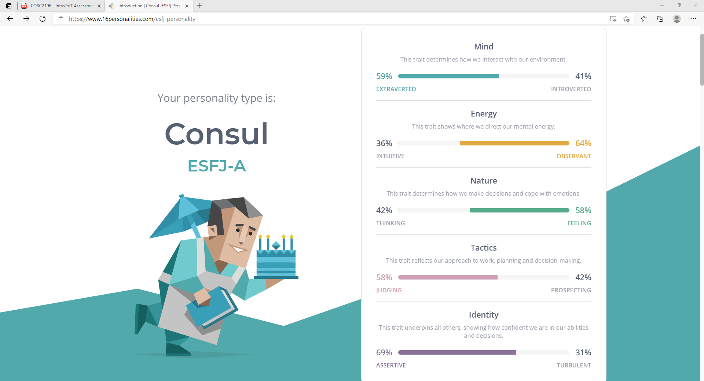

Thomas Bradford
3894415
S3894415@student.rmit.edu.au
Hi, I’m Tom, I’m 32 Years old. I have a background in the trade industry, I’m a glazier by trade. I have been doing glass in high rises from the age of 17. I also did 5 years in the royal Australian Regiment. I was a part of a couple operations with 8/9 RAR. I was deployed to East Timor and also to Malaysia. I have not studied since I completed grade 11 in high school. I recently got back from a trip around Australia with my wife, we took a year off work and went around with our 4WD and camper trailer was an absolute blast. .
My interest in IT is just the love of technology and how it helps us and entertains us in a way that just was not possible years ago. My interest in it stems from when I was young, I was always into my video games remote control cars computers even playing snake 2 on my nokia 3315. There was not really a particular event that sparked my interest I have always been interested as long as I can remember. I chose to come to RMIT because I have always regretted not studying after school so after a year off work, I decided now would be the perfect time to start my studies. I looked into several courses before signing up to RMIT, but they didn’t seem to be that great and didn’t get much out of them in the end. So, I decided to go with RMIT after reading lots of reviews. During my studies I expect to learn about all the different roles in IT. How to use many of the tools accessible to us and how to help others with IT related problems. I hope to gain all the skills required to gain work in the IT field.

My results For the Myers Briggs test I got ESFJ-A or Consul. Here is the Introduction it gave me. “People who share the Consul personality type are, for lack of a better word, popular – which makes sense, given that it is also a very common personality type, making up twelve percent of the population. In high school, Consuls are the cheerleaders and the quarterbacks, setting the tone, taking the spotlight and leading their teams forward to victory and fame. Later in life, Consuls continue to enjoy supporting their friends and loved ones, organizing social gatherings and doing their best to make sure everyone is happy. Discussing scientific theories or debating European politics isn’t likely to capture Consuls’ interest for too long. Consuls are more concerned with fashion and their appearance, their social status and the standings of other people. Practical matters and gossip are their bread and butter, but Consuls do their best to use their powers for good.” Respecting the Wisdom of Leadership Consuls are altruists, and they take seriously their responsibility to help and to do the right thing. Unlike their Diplomat relatives however, people with the Consul personality type will base their moral compass on established traditions and laws, upholding authority and rules, rather than drawing their morality from philosophy or mysticism. It’s important for Consuls to remember though, that people come from many backgrounds and perspectives, and what may seem right to them isn’t always an absolute truth. Consuls love to be of service, enjoying any role that allows them to participate in a meaningful way, so long as they know that they are valued and appreciated. This is especially apparent at home, and Consuls make loyal and devoted partners and parents. Consul personalities respect hierarchy, and do their best to position themselves with some authority, at home and at work, which allows them to keep things clear, stable and organized for everyone. Play Dates Aren’t Just for the Kids! Supportive and outgoing, Consuls can always be spotted at a party – they’re the ones finding time to chat and laugh with everyone! But their devotion goes further than just breezing through because they have to. Consuls truly enjoy hearing about their friends’ relationships and activities, remembering little details and always standing ready to talk things out with warmth and sensitivity. If things aren’t going right, or there’s tension in the room, Consuls pick up on it and to try to restore harmony and stability to the group. Being pretty conflict-averse, Consuls spend a lot of their energy establishing social order, and prefer plans and organized events to open-ended activities or spontaneous get-togethers. People with this personality type put a lot of effort into the activities they’ve arranged, and it’s easy for Consuls’ feelings to be hurt if their ideas are rejected, or if people just aren’t interested. Again, it’s important for Consuls to remember that everyone is coming from a different place, and that disinterest isn’t a comment about them or the activity they’ve organized – it’s just not their thing. Coming to terms with their sensitivity is Consuls’ biggest challenge – people are going to disagree and they’re going to criticize, and while it hurts, it’s just a part of life. The best thing for Consuls to do is to do what they do best: be a role model, take care of what they have the power to take care of, and enjoy that so many people do appreciate the efforts they make. Strengths include. • Strong practical skills • Strong sense of duties • Very loyal • Sensitive and warm • Good at connecting with others Weaknesses include • Worried about their social statuses • Inflexible • Reluctant to innovate or improvise • Vulnerable to criticism • Too selfless
My learning style. Here are my results according to http://www.educationplanner.org/students/self-assessments/learning-styles-quiz.shtml • Auditory: 40% • Visual: 40% • Tactile: 20% You are an Auditory/Visual learner! Check out the information below, or view all of the learning styles. Auditory If you are an auditory learner, you learn by hearing and listening. You understand and remember things you have heard. You store information by the way it sounds, and you have an easier time understanding spoken instructions than written ones. You often learn by reading out loud because you have to hear it or speak it in order to know it. As an auditory learner, you probably hum or talk to yourself or others if you become bored. People may think you are not paying attention, even though you may be hearing and understanding everything being said. Here are some things that auditory learners like you can do to learn better. • Sit where you can hear. • Have your hearing checked on a regular basis. • Use flashcards to learn new words; read them out loud. • Read stories, assignments, or directions out loud. • Record yourself spelling words and then listen to the recording. • Have test questions read to you out loud. • Study new material by reading it out loud. Remember that you need to hear things, not just see things, in order to learn well. Visual If you are a visual learner, you learn by reading or seeing pictures. You understand and remember things by sight. You can picture what you are learning in your head, and you learn best by using methods that are primarily visual. You like to see what you are learning. As a visual learner, you are usually neat and clean. You often close your eyes to visualize or remember something, and you will find something to watch if you become bored. You may have difficulty with spoken directions and may be easily distracted by sounds. You are attracted to color and to spoken language (like stories) that is rich in imagery. Here are some things that visual learners like you can do to learn better: • Sit near the front of the classroom. (It won't mean you're the teacher's pet!) • Have your eyesight checked on a regular basis. • Use flashcards to learn new words. • Try to visualize things that you hear or things that are read to you. • Write down key words, ideas, or instructions. • Draw pictures to help explain new concepts and then explain the pictures. • Color code things. • Avoid distractions during study times. Remember that you need to see things, not just hear things, to learn well.
Integrity test
This watch will help any fisherman know when the best time to fish in the location he or she is in. it will also tell them how long in the day or night they have left. It would have sunup and down times and also major and minor bite times. It would also tell them about the possible fish in the area, and what bait is in the area to give them an idea what bait or lures might work in the area. It would have GPS and you could load in where your going the following day or even in the morning if you were headed somewhere off the grid.
As a fisherman, I often find myself off the grid and somewhere new. It is very hard if when you are fishing you don’t know what you are targeting and you don’t know what times you would be most likely to catch them. With this watch you would no what is in the area and when they are likely to be on the bite. If you are on the grid you have to spend the time looking at your phone to find information of the area and the species, this could mean missing your window. With this watch it would only take a glance at your wrist and maybe a few buttons. It would be a game changer.
The fisherman’s watch will allow the wearer and his or her companions a detailed explanation of their locations • tide times – This would tell you exactly when the next change of tide is whether it was high or low tide. It would also tell you the meter that tide would be, for example. 4:03 pm (down arrow indicating low tide) 0.53m • Major and Minor bite periods – Every day there are major and minor bite windows that tell you the ideal time to fish and the “bite percentage” these are a fisherman’s best friend and paired with a bit of knowledge can go a long way. • Species – This would tell you what species are known to the area and what habitat they prefer. • Bait – this would tell you the bait that’s in the area. For example. Prawns and juvenile mullet are the main source of bait in this area • Sun rise and set times – This would tell you what time the sunset and rise are. • The temperature – this would tell tem the high for the day and also the current temperature. There would need to be some link to your phone in order to get all the information for your area. It would take information from its own database for things like species and bait. But would pull information from other sites for weather information and sunrise and set times. The data base would have all the information for everywhere around the world on it and would keep growing as time went on. There would also be an app with the watch where users can put in what the caught, where they caught it and what they were using as bait. With this watch any user could have all this information at a mere glance of the wrist and would give them an advantage over the fish. It would also let them know how hot it is so they can take all the measures available to be sun smart.
The watch hardware would need to be built having Bluetooth, GPS, temperature gauge, touchscreen capabilites and clock. The app would need experiences programmers to write the code for the app and making it linkable to the watch. The database would need a team of researchers looking up the facts needed to put all required information in the and would also need a team of researchers keeping all that data up to date as time went on. It would need testers to test the watch and make sure its working as planned.
If this project were successful this watch would be sold at every fishing store around the world. It would allow fisherman the ultimate advantage. It would also come in handy for people caming on the beach by knowing when it is safe to drive on the sand, with no risk of being stuck by the tides. It would also help parents by telling them how hot it is going to be that day whether to pack some sort of shade equipment ect.